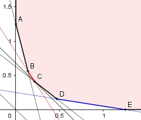

Aufgabe 83 Fleisch und Hülsenfrüchte enthalten pro kg Fleisch Hülsenfrüchte Wärmeenergie in kJ 16 000 8 000 Eiweiß in g 80 400 Fett in g 400 80 Kohlenhydrate in g 320 320 Sonstige in g 200 200 Preis in €/kg 10 8 Eine Notration soll mindestens 6 700 kJ, 100 g Eiweiß, 100 g Fett, 200 g Kohlenhydrate und eine unbestimmte Menge Sonstige enthalten. Mit welchen Mengen Fleisch und Hülsenfrüchten wird sie am billigsten? x = kg Fleisch y = kg Hülsenfrüchte Bedingungen: 16 000x + 8 000y ≥ 6 700 80x + 400y ≥ 100 400x + 80y ≥ 100 320x + 320y ≥ 200 200x + 200y > 0 x > 0 x ∈ ℝ y > 0 y ∈ ℝ Zielfunktion: G = 10x + 8y Randgerade 1: 16 000x + 8 000y = 6 700 Randgerade 2: 80x + 400y = 100 Randgerade 3: 400x + 80y = 100 Randgerade 4: 320x + 320y = 200

Die Eckpunkte A, B, C, D und E bilden das Planungsgebiet, das alle Ungleichungen erfüllt. Eckpunkt A ist der Schnittpunkt der Randgerade 3 mit x = 0 400 * 0 + 80y = 100 |:80 y = 1,25 A(0|1,25). Eckpunkt B ist der Schnittpunkt der Randgeraden 1 und 3 16 000x + 8 000y = 6 700 |-16 000x 8 000y = 6 700 - 16 000x |:8 000 y = 0,8375 - 2x Eingesetzt: 400x + 80 * (0,8375 - 2x) = 100 400x + 67 - 160x = 100 |-67 240x = 33 |:240 x = 0,1375 Eingesetzt: y = 0,8375 - 2 * 0,1375 = 0,5625 B(0,1375|0,5625) Eckpunkt C ist der Schnittpunkt der Randgeraden 1 und 4 16 000x + 8 000y = 6 700 |-16 000x 8 000y = 6 700 - 16 000x |:8 000 y = 0,8375 - 2x Eingesetzt: 320x + 320 * (0,8375 - 2x) = 200 320x + 268 - 640x = 200 |-200 + 320x 320x = 68 |:320 x = 0,2125 Eingesetzt: y = 0,8375 - 2 * 0,2125 = 0,4125 C(0,2125|0,4125) Eckpunkt D ist der Schnittpunkt der Randgeraden 2 und 4 80x + 400y = 100 |-400y 80x = 100 - 400y |:80 x = 1,25 - 5y Eingesetzt: 320 * (1,25 - 5y) + 320y = 200 400 - 1 600y + 320y = 200 |-200 + 1 280y 1 280y = 200 |:1 280 y = 0,15625 Eingesetzt: x = 1,25 - 5 * 0,15625 = 0,46875 D(0,46875|0,15625) Eckpunkt E ist der Schnittpunkt der Randgerade 2 mit y = 0 Eingesetzt: 80x + 400 * 0 = 100 |:80 x = 1,25 E(1,25|0) Die Parallele der Zielfunktion G liegt in C am tiefsten --> Gmin = 10 * 0,2125 + 8 * 0,4125 = = 5,425 € Die Notration wird mit 0,2125 kg Fleisch und 0,4125 kg Hülsenfrüchten am billigsten.